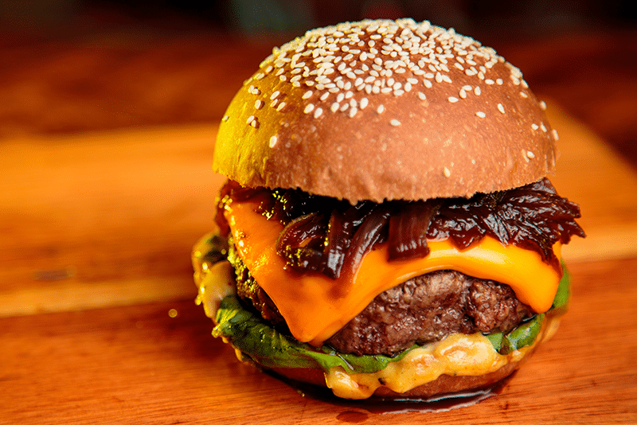

Hamburguesa Bacon Supreme
Imagina una jugosa hamburguesa hecha con una porción generosa de carne de res 100% Angus, asada a la perfección para lograr un interior jugoso y un exterior con un dorado ideal. Encima de la carne, se colocan rebanadas crujientes de tocineta ahumada, que aportan un sabor intenso y salado que complementa perfectamente la jugosidad de la carne. La hamburguesa se corona con una loncha de queso cheddar fundido, que se derrite lentamente sobre la tocineta, aportando un toque cremoso y un sabor ligeramente ácido que contrasta de manera deliciosa con la tocineta y la carne. Como acompañamiento, se agregan rodajas finas de cebolla morada, tomate fresco y lechuga crujiente, que aportan frescura y una textura crujiente. Todo esto se coloca entre dos mitades de un suave pan brioche, ligeramente tostado en su interior para un toque crujiente, pero esponjoso en cada bocado. Para finalizar, se añade una salsa especial de la casa, una mezcla de mayonesa con un toque de mostaza dijon y un toque secreto de la cocina, que redondea los sabores con su cremosidad y un toque picante.
